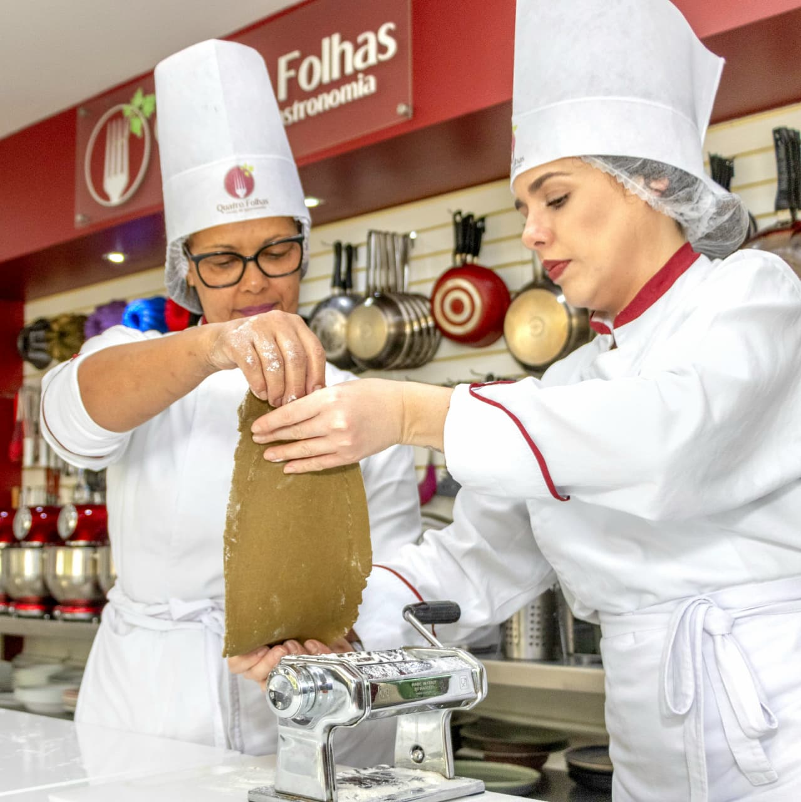
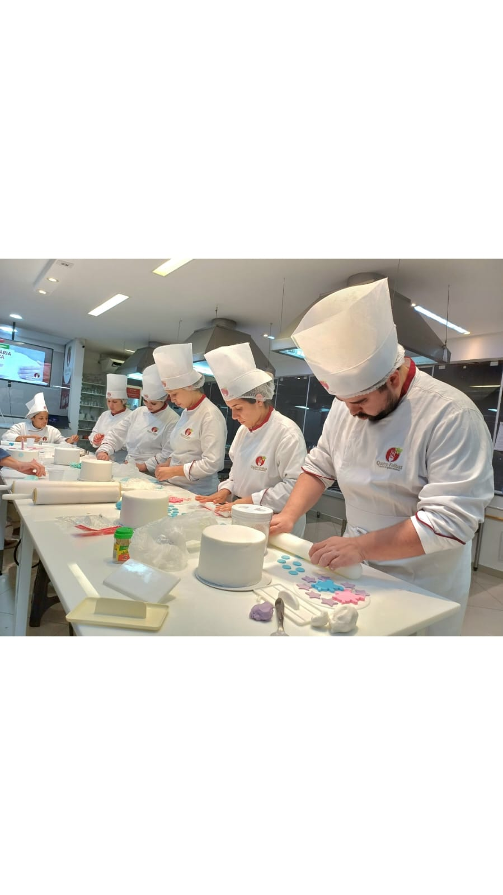

Habilidades básicas
Organização, segurança, utensílios e fundamentos da rotina profissional.
Curso profissionalizante · Turma setembro 2026
Aprenda gastronomia fazendo, em uma cozinha profissional e com acompanhamento próximo. Todas as 32 aulas são práticas.
Atendimento direto da equipe Quatro Folhas · WhatsApp (11) 94778-1922

Formação completa
Você desenvolve fundamentos, repertório e confiança para cozinhar profissionalmente, empreender ou elevar seu nível técnico.
Organização, segurança, utensílios e fundamentos da rotina profissional.
Métodos de cocção, cortes, bases e construção de sabor.
Massas, fermentação, preparos clássicos e acabamento.
Ingredientes, tradições e técnicas que valorizam a nossa identidade.
Repertório de diferentes culturas e cozinhas do mundo.
Autonomia para combinar técnicas e desenvolver novos preparos.
Vivência prática da operação e do atendimento de um restaurante.
Visão de negócio, produto, custos e caminhos para começar.
Princípios de harmonização e integração entre alimentos e bebidas.
O grande diferencial
32A técnica é ensinada enquanto você executa. Cada encontro coloca o aluno diante de ingredientes, equipamentos e situações reais de cozinha.


Uma escolha que acompanha seu crescimento
Seu sonho merece uma formação à altura: prática de verdade, estrutura profissional, ingredientes de excelência e experiências que ampliam seu repertório dentro e fora da cozinha.

O espaço já recebeu gravações e produções ligadas a Globoplay, Batalha dos Confeiteiros, Bake Off Brasil e outros projetos gastronômicos.
Alunos dos cursos profissionalizantes contam com uma vivência gastronômica em Buenos Aires e aula especial preparada para o grupo Quatro Folhas.
Conhecer a experiência internacionalCada preparo utiliza produtos criteriosamente selecionados para que o aluno reconheça qualidade, desenvolva técnica e alcance resultados de padrão profissional.
Materiais, comunicados, pagamentos e certificados organizados para apoiar sua formação também fora da aula.
Bancadas, equipamentos e organização de cozinha pensados para desenvolver segurança, ritmo e autonomia.
Escolha seu horário
As duas turmas têm aulas às segundas-feiras e seguem o mesmo programa de 32 encontros práticos.
Para quem prefere aprender e praticar no início do dia.
Uma opção pensada para conciliar a formação com a rotina profissional.
Condição especial
A campanha promocional é válida até 15 de agosto de 2026. Fale com nossa equipe para consultar disponibilidade no turno escolhido.
Valor normal R$ 14.565,24
Valor com desconto pontualidade fora da campanha: R$ 11.003,16.
Economia de R$ 4.365,24 em relação ao valor normal.
Quero aproveitar a condiçãoCondição sujeita à disponibilidade de vagas e confirmação da matrícula até a data da campanha.
Dúvidas frequentes
Se ainda restar alguma dúvida, envie seus dados ou fale diretamente com nossa equipe pelo WhatsApp.
Não. O curso começa pelas habilidades básicas e evolui gradualmente para técnicas e experiências mais completas.
Sim. O formato prático é um dos principais diferenciais do Chef Profissional: o aluno aprende executando os preparos em cozinha equipada.
As aulas acontecem às segundas-feiras. A turma da manhã estuda das 8h30 às 12h e a turma da noite, das 19h às 22h30.
O início previsto para as duas turmas é 14 de setembro de 2026.
O curso pode ser parcelado em até 12 vezes no cartão. Até 15/08/2026, a campanha oferece a condição de 12 parcelas de R$ 850,00.
Próximo passo
Preencha os dados. Nossa equipe entra em contato para apresentar o curso, confirmar o turno e orientar sobre a matrícula.
Leva menos de um minuto. Seus dados serão usados somente para este atendimento.